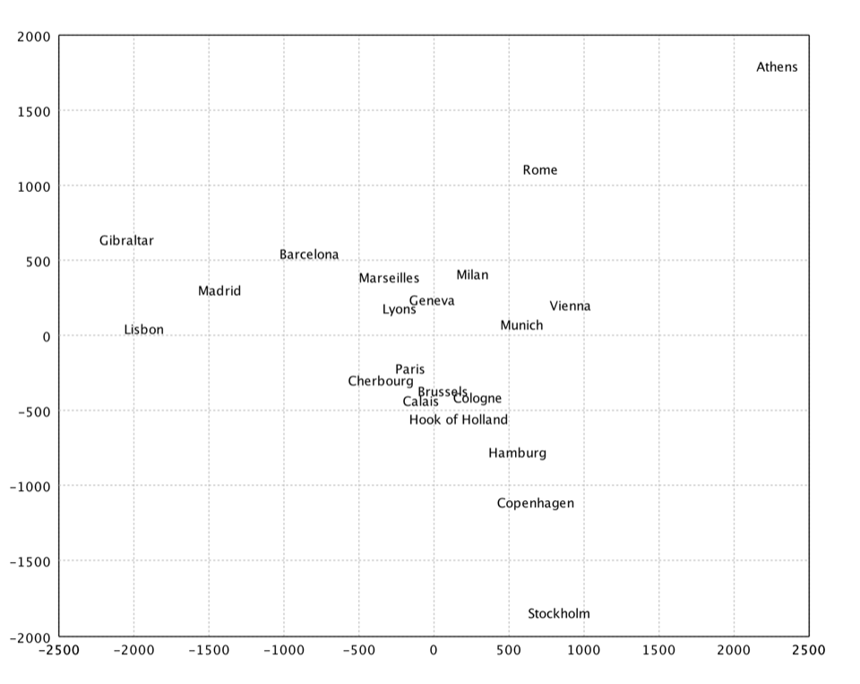
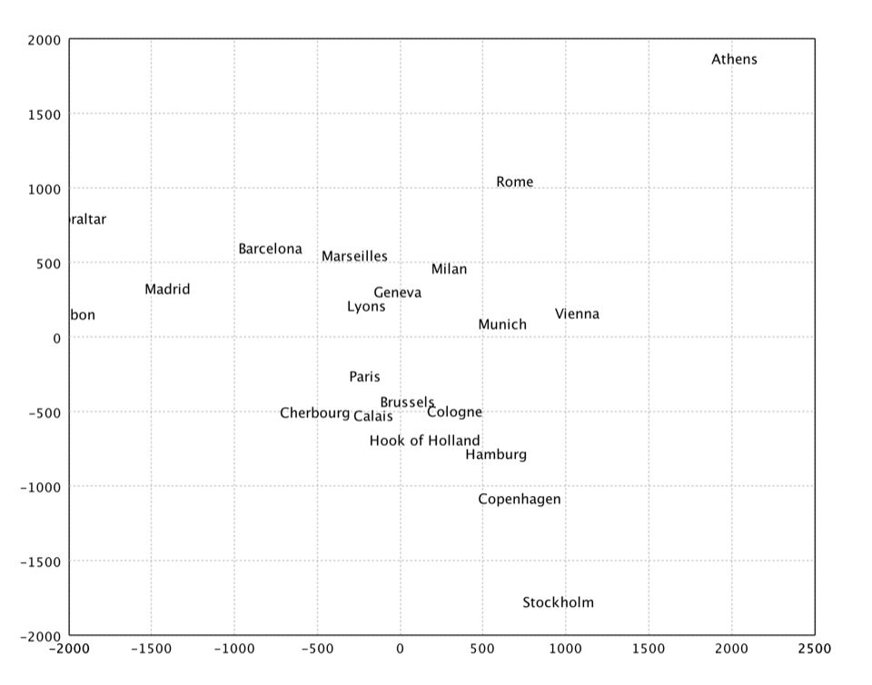
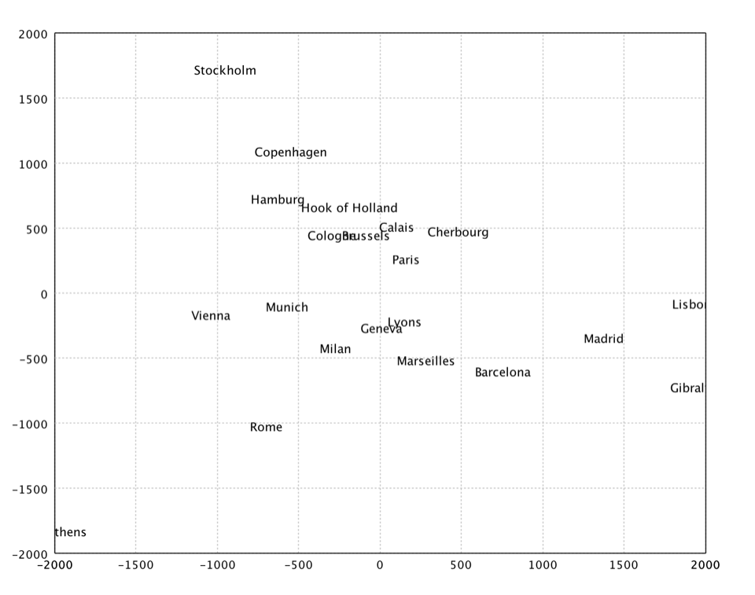

{% include "toc.njk" %}

<div class="col-md-9 order-md-first">
    <h1 id="mds-top" class="title">Multi-Dimensional Scaling</h1>

    <p>Multidimensional scaling is a set of related statistical techniques
        often used in information visualization for exploring similarities or
        dissimilarities in data. An MDS algorithm starts with a matrix of item-item
        similarities, then assigns a location to each item in low-dimensional space.
        For sufficiently low dimension, the resulting locations may be displayed in a
        graph or 3D visualization.</p>

    <p>The major types of MDS algorithms include:</p>
    <dl>
     <dt>Classical multi-dimensional scaling</dt>
     <dd><p>It takes an input matrix giving dissimilarities between pairs of items and
     outputs a coordinate matrix whose configuration minimizes a loss function
     called strain.</p></dd>
     <dt>Metric multi-dimensional scaling</dt>
     <dd><p>A superset of classical MDS that generalizes the optimization procedure
     to a variety of loss functions and input matrices of known distances with
     weights and so on. A useful loss function in this context is called stress
     which is often minimized using a procedure called stress majorization.</p></dd>
     <dt>Non-metric multi-dimensional scaling</dt>
     <dd><p>In contrast to metric MDS, non-metric MDS finds both a non-parametric
     monotonic relationship between the dissimilarities in the item-item matrix
     and the Euclidean distances between items, and the location of each item in
     the low-dimensional space. The relationship is typically found using isotonic
     regression.</p></dd>
     <dt>Generalized multi-dimensional scaling</dt>
     <dd><p>An extension of metric multidimensional scaling, in which the target
     space is an arbitrary smooth non-Euclidean space. In case when the
     dissimilarities are distances on a surface and the target space is another
     surface, GMDS allows finding the minimum-distortion embedding of one surface
     into another.</p></dd>
    </dl>

    <h2 id="classical">Classical Multi-dimensional Scaling</h2>

    <p>Classical multidimensional scaling is also known as principal coordinates
        analysis. Given a matrix <code>A</code> of dissimilarities (e.g. pairwise distances), MDS
        finds a set of points in low dimensional space that well-approximates the
        dissimilarities in <code>A</code>. We are not restricted to using a Euclidean
        distance metric. However, when Euclidean distances are used, classical MDS is
        equivalent to PCA.</p>

    <div class="code-playground glass" data-lang="java">
  <div class="playground-toolbar">
    <button type="button" class="lang-tab is-active" data-lang="java" data-pane="pg-1-0">Java</button>
    <button type="button" class="lang-tab" data-lang="scala" data-pane="pg-1-1">Scala</button>
    <button type="button" class="lang-tab" data-lang="kotlin" data-pane="pg-1-2">Kotlin</button>
    <span class="toolbar-spacer"></span>
    <button type="button" class="btn btn-ghost btn-sm playground-copy">Copy</button>
    {% include "components/playground-extra-actions.njk" %}
  </div>
    <div id="pg-1-0" class="hero-pane">
      <pre class="playground-source language-java"><code class="language-java">
    public class MDS {
        public static MDS fit(double[][] proximity, Options options);
    }
          </code></pre>
    </div>
    <div id="pg-1-1" class="hero-pane" hidden>
      <pre class="playground-source language-scala"><code class="language-scala">
    def mds(proximity: Array[Array[Double]], k: Int, add: Boolean = false): MDS
    </code></pre>
    </div>
    <div id="pg-1-2" class="hero-pane" hidden>
      <pre class="playground-source language-kotlin"><code class="language-kotlin">
    fun mds(proximity: Array&lt;DoubleArray&gt;, k: Int, add: Boolean = false): MDS
    </code></pre>
    </div>
  <div class="playground-editor" hidden></div>
</div>

    <p>where <code>proximity</code> is the non-negative proximity matrix of dissimilarities.
        The diagonal should be zero and all other elements should be positive and
        symmetric. For pairwise distances matrix, it should be just the plain
        distance, not squared.
        The parameter <code>k</code> is the dimension of output space.
        If the parameter <code>add</code> is true, the method estimates an appropriate constant to be added
        to all the dissimilarities, apart from the self-dissimilarities, that
        makes the learning matrix positive semi-definite. The other formulation of
        the additive constant problem is as follows. If the proximity is
        measured in an interval scale, where there is no natural origin, then there
        is not a sympathy of the dissimilarities to the distances in the Euclidean
        space used to represent the objects. In this case, we can estimate a constant c
        such that proximity + c may be taken as ratio data, and also possibly
        to minimize the dimensionality of the Euclidean space required for
        representing the objects.</p>

    <div class="code-playground glass" data-lang="java">
  <div class="playground-toolbar">
    <button type="button" class="lang-tab is-active" data-lang="java" data-pane="pg-2-0">Java</button>
    <button type="button" class="lang-tab" data-lang="scala" data-pane="pg-2-1">Scala</button>
    <button type="button" class="lang-tab" data-lang="kotlin" data-pane="pg-2-2">Kotlin</button>
    <span class="toolbar-spacer"></span>
    <button type="button" class="btn btn-ghost btn-sm playground-copy">Copy</button>
    {% include "components/playground-extra-actions.njk" %}
  </div>
    <div id="pg-2-0" class="hero-pane">
      <pre class="playground-source language-java"><code class="language-java">
    var eurodist = Read.csv("data/mds/eurodist.txt", CSVFormat.DEFAULT.withDelimiter('\t'));
    var dist = eurodist.drop(0).toArray();
    var citys = eurodist.column(0).toStringArray();
    var x = MDS.fit(dist, new MDS.Options(2, true)).coordinates();
    var figure = TextPlot.of(citys, x).figure();
    show(figure);
          </code></pre>
    </div>
    <div id="pg-2-1" class="hero-pane" hidden>
      <pre class="playground-source language-scala"><code class="language-scala">
    val eurodist = read.csv("data/mds/eurodist.txt", delimiter = "\t", header = false)
    val dist = eurodist.drop(0).toArray()
    val citys = eurodist.stringVector(0).toArray()
    val x = mds(dist, 2).coordinates
    show(text(citys, x))
    </code></pre>
    </div>
    <div id="pg-2-2" class="hero-pane" hidden>
      <pre class="playground-source language-kotlin"><code class="language-kotlin">
    import smile.*;
    import smile.manifold.*;
    import smile.plot.swing.*;
    val eurodist = read.csv("data/mds/eurodist.txt", delimiter = '\t', header = false)
    val dist = eurodist.drop(0).toArray()
    val citys = eurodist.stringVector(0).toArray()
    val x = mds(dist, 2).coordinates
    TextPlot.of(citys, x).canvas().window()
    </code></pre>
    </div>
  <div class="playground-editor" hidden></div>
</div>

    <p>In the above example, we apply MDS to a distance matrix of some European cities.</p>

    <div style="width: 100%; display: inline-block; text-align: center;">
        
        <div class="caption" style="min-width: 480px;">MDS</div>
    </div>

    <h2 id="kruskal">Kruskal's Nonmetric MDS</h2>

    <p>Kruskal's nonmetric MDS. In non-metric MDS, only the rank order of entries
        in the proximity matrix (not the actual dissimilarities) is assumed to
        contain the significant information. Hence, the distances of the final
        configuration should as far as possible be in the same rank order as the
        original data. Note that a perfect ordinal re-scaling of the data into
        distances is usually not possible. The relationship is typically found
        using isotonic regression.</p>

    <div class="code-playground glass" data-lang="java">
  <div class="playground-toolbar">
    <button type="button" class="lang-tab is-active" data-lang="java" data-pane="pg-3-0">Java</button>
    <button type="button" class="lang-tab" data-lang="scala" data-pane="pg-3-1">Scala</button>
    <button type="button" class="lang-tab" data-lang="kotlin" data-pane="pg-3-2">Kotlin</button>
    <span class="toolbar-spacer"></span>
    <button type="button" class="btn btn-ghost btn-sm playground-copy">Copy</button>
    {% include "components/playground-extra-actions.njk" %}
  </div>
    <div id="pg-3-0" class="hero-pane">
      <pre class="playground-source language-java"><code class="language-java">
    public class IsotonicMDS {
        public static IsotonicMDS fit(double[][] proximity, Options options);
    }
          </code></pre>
    </div>
    <div id="pg-3-1" class="hero-pane" hidden>
      <pre class="playground-source language-scala"><code class="language-scala">
    def isomds(proximity: Array[Array[Double]], k: Int, tol: Double = 0.0001, maxIter: Int = 200): IsotonicMDS
    </code></pre>
    </div>
    <div id="pg-3-2" class="hero-pane" hidden>
      <pre class="playground-source language-kotlin"><code class="language-kotlin">
    fun isomds(proximity: Array&lt;DoubleArray&gt;, k: Int, tol: Double = 0.0001, maxIter: Int = 200): IsotonicMDS
    </code></pre>
    </div>
  <div class="playground-editor" hidden></div>
</div>

    <p>where <code>tol</code> is the tolerance for stopping iterations, and
        <code>maxIter</code> is the maximum number of iterations.</p>

    <div class="code-playground glass" data-lang="java">
  <div class="playground-toolbar">
    <button type="button" class="lang-tab is-active" data-lang="java" data-pane="pg-4-0">Java</button>
    <button type="button" class="lang-tab" data-lang="scala" data-pane="pg-4-1">Scala</button>
    <button type="button" class="lang-tab" data-lang="kotlin" data-pane="pg-4-2">Kotlin</button>
    <span class="toolbar-spacer"></span>
    <button type="button" class="btn btn-ghost btn-sm playground-copy">Copy</button>
    {% include "components/playground-extra-actions.njk" %}
  </div>
    <div id="pg-4-0" class="hero-pane">
      <pre class="playground-source language-java"><code class="language-java">
    var x = IsotonicMDS.fit(dist).coordinates();
    var figure = TextPlot.of(citys, x).figure();
    show(figure);
          </code></pre>
    </div>
    <div id="pg-4-1" class="hero-pane" hidden>
      <pre class="playground-source language-scala"><code class="language-scala">
    val x = isomds(dist, 2).coordinates
    show(text(citys, x))
    </code></pre>
    </div>
    <div id="pg-4-2" class="hero-pane" hidden>
      <pre class="playground-source language-kotlin"><code class="language-kotlin">
    val x = isomds(dist, 2).coordinates
    TextPlot.of(citys, x).canvas().window()
    </code></pre>
    </div>
  <div class="playground-editor" hidden></div>
</div>

    <div style="width: 100%; display: inline-block; text-align: center;">
        
        <div class="caption" style="min-width: 480px;">Kruskal's Nonmetric MDS</div>
    </div>

    <h2 id="sammon">Sammon's Mapping</h2>

    <p>Sammon's mapping is an iterative technique for making interpoint
        distances in the low-dimensional projection as close as possible to the
        interpoint distances in the high-dimensional object. Two points close
        together in the high-dimensional space should appear close together in the
        projection, while two points far apart in the high dimensional space should
        appear far apart in the projection. The Sammon's mapping is a special case of
        metric least-square multidimensional scaling.</p>

    <p>Ideally when we project from a high dimensional space to a low dimensional
        space the image would be geometrically congruent to the original figure.
        This is called an isometric projection. Unfortunately it is rarely possible
        to isometrically project objects down into lower dimensional spaces. Instead of
        trying to achieve equality between corresponding inter-point distances we
        can minimize the difference between corresponding inter-point distances.
        This is one goal of the Sammon's mapping algorithm. A second goal of the Sammon's
        mapping algorithm is to preserve the topology as good as possible by giving
        greater emphasize to smaller interpoint distances. The Sammon's mapping
        algorithm has the advantage that whenever it is possible to isometrically
        project an object into a lower dimensional space it will be isometrically
        projected into the lower dimensional space. But whenever an object cannot
        be projected down isometrically the Sammon's mapping projects it down to reduce
        the distortion in interpoint distances and to limit the change in the
        topology of the object.</p>

    <p>The projection cannot be solved in a closed form and may be found by an
        iterative algorithm such as gradient descent suggested by Sammon. Kohonen
        also provides a heuristic that is simple and works reasonably well.</p>

    <div class="code-playground glass" data-lang="java">
  <div class="playground-toolbar">
    <button type="button" class="lang-tab is-active" data-lang="java" data-pane="pg-5-0">Java</button>
    <button type="button" class="lang-tab" data-lang="scala" data-pane="pg-5-1">Scala</button>
    <button type="button" class="lang-tab" data-lang="scala" data-pane="pg-5-2">Kotlin</button>
    <span class="toolbar-spacer"></span>
    <button type="button" class="btn btn-ghost btn-sm playground-copy">Copy</button>
    {% include "components/playground-extra-actions.njk" %}
  </div>
    <div id="pg-5-0" class="hero-pane">
      <pre class="playground-source language-java"><code class="language-java">
    public class SammonMapping {
        public static SammonMapping fit(double[][] proximity, Options options);
    }
          </code></pre>
    </div>
    <div id="pg-5-1" class="hero-pane" hidden>
      <pre class="playground-source language-scala"><code class="language-scala">
    def sammon(proximity: Array[Array[Double]], k: Int, lambda: Double = 0.2, tol: Double = 0.0001, maxIter: Int = 100): SammonMapping
    </code></pre>
    </div>
    <div id="pg-5-2" class="hero-pane" hidden>
      <pre class="playground-source language-scala"><code class="language-scala">
    fun sammon(proximity: Array&lt;DoubleArray&gt;, k: Int, lambda: Double = 0.2, tol: Double = 0.0001, maxIter: Int = 100): SammonMapping
    </code></pre>
    </div>
  <div class="playground-editor" hidden></div>
</div>

    <p>where <code>lambda</code> is the initial value of the step size constant in diagonal Newton method.</p>

    <div class="code-playground glass" data-lang="java">
  <div class="playground-toolbar">
    <button type="button" class="lang-tab is-active" data-lang="java" data-pane="pg-6-0">Java</button>
    <button type="button" class="lang-tab" data-lang="scala" data-pane="pg-6-1">Scala</button>
    <button type="button" class="lang-tab" data-lang="kotlin" data-pane="pg-6-2">Kotlin</button>
    <span class="toolbar-spacer"></span>
    <button type="button" class="btn btn-ghost btn-sm playground-copy">Copy</button>
    {% include "components/playground-extra-actions.njk" %}
  </div>
    <div id="pg-6-0" class="hero-pane">
      <pre class="playground-source language-java"><code class="language-java">
    var x = SammonMapping.fit(dist).coordinates();
    var figure = TextPlot.of(citys, x).figure();
    show(figure);
          </code></pre>
    </div>
    <div id="pg-6-1" class="hero-pane" hidden>
      <pre class="playground-source language-scala"><code class="language-scala">
    val x = sammon(dist, 2).coordinates
    show(text(citys, x))
    </code></pre>
    </div>
    <div id="pg-6-2" class="hero-pane" hidden>
      <pre class="playground-source language-kotlin"><code class="language-kotlin">
    val x = sammon(dist, 2).coordinates
    TextPlot.of(citys, x).canvas().window()
    </code></pre>
    </div>
  <div class="playground-editor" hidden></div>
</div>

    <div style="width: 100%; display: inline-block; text-align: center;">
        
        <div class="caption" style="min-width: 480px;">Sammon's Mapping</div>
    </div>

    <div id="btnv">
        <span class="btn-arrow-left">&larr; &nbsp;</span>
        <a class="btn-prev-text" href="association-rule.html" title="Previous Section: Association Rule Mining"><span>Association Rule Mining</span></a>
        <a class="btn-next-text" href="manifold.html" title="Next Section: Manifold Learning"><span>Manifold Learning</span></a>
        <span class="btn-arrow-right">&nbsp;&rarr;</span>
    </div>
</div>
